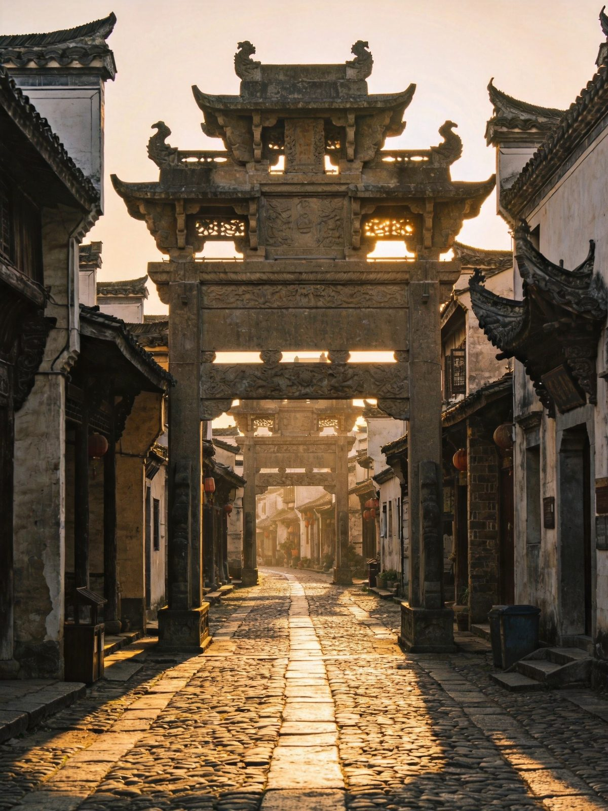
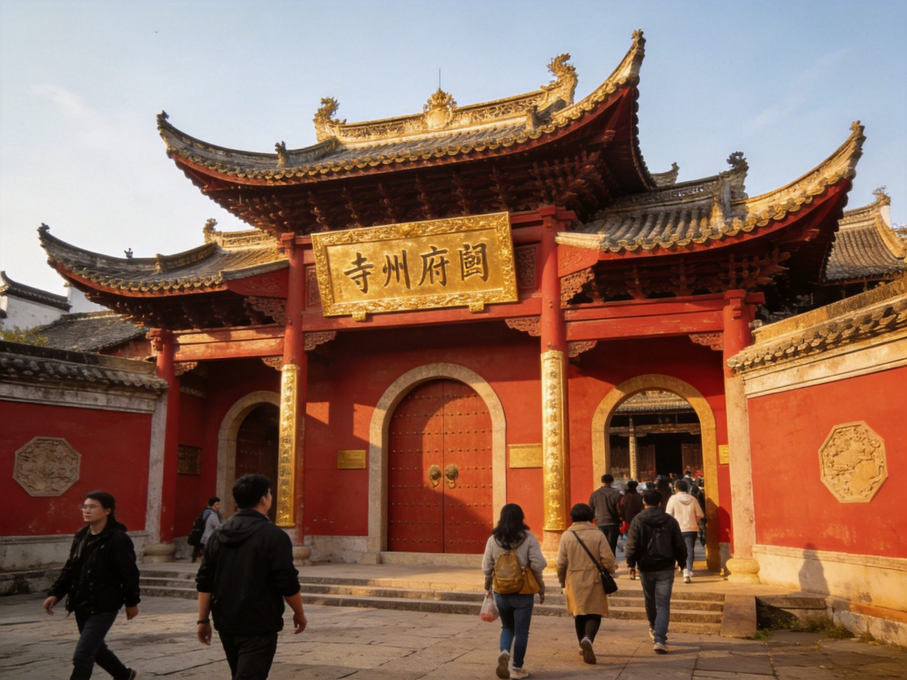

🏯 徽州古城 · HUIZHOU ANCIENT CITY (SHEXIAN)
徽州古城 · 歙县古城墙府衙全攻略
中国四大古城之一（与丽江、平遥、阆中齐名），徽州文化的活态博物馆。许国石坊是全国唯一八角明代石牌坊、徽州府衙官署复原、渔梁坝被誉为「江南都江堰」、斗山街380 米徽商古巷。古城街巷全天免费步行，核心景点联票 80–95 元/3 日有效；歙县北站 6002 路公交直达。本文含 1 日/2 日双方案、门票联票、府衙渔梁、住宿美食、预算避坑全讲清。
📍 目的地：安徽黄山 · 歙县徽州古城
👥 1–6 人自由行 · 全天可逛
⏱️ 1 日 / 2 日 双方案
💰 街巷免费 · 联票80–95
⚡1 日精华 · 快充版
白天走古城四大看点，傍晚看鱼灯巡游，把「徽文化第一古城」的精华一天收齐。
👥 1–3 人适配：古城街巷步行免费随意逛；想看核心景点才需要买联票（现场 95/线上 80–85，3 日/人有效）。
🗺️ 行程安排
-
上午 · 许国石坊 + 徽州府衙
🚌 歙县北站→古城（6002路1.5元/打车约20元）
🗼 许国石坊（全国唯一八角明代石牌坊）🏛️ 徽州府衙（9:30/14:30升堂情景剧）
💡 想看「升堂」情景剧，卡准 9:30 或 14:30 的场次；府衙属联票核心，别错过。
-
中午 · 斗山街 + 古城墙/南谯楼
🏘️ 斗山街（380米北斗七星徽商古巷）🏯 南谯楼（宋代城楼）
🏰 古城墙+徽园（联票含）🍜 老街徽菜午餐
💡 斗山街青石板、马头墙最出片，上午古巷人少；午餐可在古城老街尝徽菜。
-
下午 · 渔梁坝 + 傍晚鱼灯
🌊 渔梁坝（唐代千年水利·江南都江堰，步行约15分）
🏮 傍晚 鱼灯巡游（周三/五/六 19:30–20:30）
💡 渔梁坝在古城外南端，顺练江步行约 15 分钟即到；行程自由可延至夜观鱼灯。
🌿2 日漫步 · 松弛版
第一天逛古城核心，第二天补棠樾牌坊群与徽州村落，把府、坊、桥、村一次看全，节奏完全放慢。
👥 1–3 人适配：联票 3 日有效可合理安排两日行程；古城 3–5 月、9–11 月气候最宜人。
🗺️ 行程安排
-
DAY 1 · 古城核心深度游
🗼 许国石坊 / 徽州府衙 / 南谯楼🏘️ 斗山街 / 古城墙 / 徽园
🌊 下午 渔梁坝 + 练江傍晚🏮 夜 鱼灯巡游（周三/五/六）
💡 古城内住徽派民宿，夜灯下的马头墙别有韵味；周三/五/六晚别错过 19:30 鱼灯。
-
DAY 2 · 棠樾牌坊群 + 徽州村落 → 返程
🕍 棠樾牌坊群（百余元/含鲍家花园）🏘️ 周边徽州古村落/雄村等
🚌 下午返歙县北站/黄山北站
⚠️ 棠樾牌坊群离古城约 20 分钟车程，是「徽州牌坊」的集大成，时间够很值得补；返程留意末班公交。
⭐徽州古城核心看点 · 单独详览
把古城最有辨识度的 5 个点单独拎出来说清楚——看什么、为什么出名、怎么去。

许国石坊 · 东方凯旋门
古城中心
许国石坊 · 全国唯一八角明代石牌坊
明万历年间为大学士许国而建的功德牌坊，全国现存唯一一座「八脚」即八角形石牌坊，形制独一无二，被称为「东方凯旋门」。青石精雕、飞檐斗拱，就立在古城最中心的地带。
👍 必去理由：徽州古城的「镇城之宝」。全国只此一座八角坊，站姿、机位都出片。

徽州府衙 · 官署复原
古城核心
徽州府衙 · 千年官署重开
徽州古城的行政中枢与"心脏"，按明清形制复原的官署建筑群，仪门、大堂、二堂一应俱全。每日 9:30、14:30 有「升堂」情景剧表演，重现古代衙署审案的生动场景。
👍 必去理由：古城「府」字当头的核心体验；看一场升堂表演最有代入感。
渔梁坝 · 江南都江堰
古城南端
渔梁坝 · 唐代千年水利枢纽
始建于唐代的千年水利工程，横卧练江之上，被誉为「江南都江堰」。坝体以巨石榫卯砌筑、历经千年犹在，兼具挡水、引航、泄洪功能，是认识古代徽州水利智慧与古城水运的活教材。
👍 必去理由：从古城步行约 15 分钟即达；站在坝上看练江奔流，是徽州古城的另一面。
斗山街 · 徽商古巷
古城内
斗山街 · 380米北斗七星古巷
全长约 380 米的老巷，因沿北斗七星布局得名，两侧徽商大宅、深宅大院鳞次栉比，马头墙与青石板在窄巷内交错，是古城最有「徽味」的一段步行街。
👍 必去理由：徽商旧宅最集中的古巷。从许国石坊进入，一路看老宅、牌坊、门楼。
古城墙 · 宋代城楼
古城周边
古城墙 + 南谯楼 · 守城之钥
徽州古城保留着较为完整的古城墙与宋代南谯楼，楼阁高耸、形势雄壮，是古城的标志性入口。登楼可俯瞰古城街巷与马头墙天际线，徽园与古城墙相连，属联票核心范围。
👍 必去理由：登楼看古城全景的制高点；傍晚暖光下的古城天际线尤其出片。
🚗怎么去：高铁 vs 自驾
歙县北站可直达，从黄山北站/黄山景区联动也很顺；古城在县城核心，步行即可深度游。
徽州古城高铁/自驾两种交通方式对比
| 方式 | 🚄 高铁 | 🚗 自驾 |
|---|
| 时长/成本 |
歙县北站→古城 6002路公交1.5元或打车约20元；黄山北站可联动 |
合肥、江浙沪高速直抵，车停古城外围停车场 |
|---|
| 适合人群 |
✔ 推荐：高铁直达到古城性价比最高 |
自驾联动黄山/皖南村落线 |
|---|
| 注意 |
到歙县北站而非黄山北站更近；留意末班公交 |
古城核心禁行，需停外围步行进入 |
|---|
| 💡 一句话建议：到歙县北站（不是黄山北站）更近，6002 路公交 1.5 元即达古城；古城街巷全天免费，适合慢走慢逛，与黄山、宏村西递可串成皖南经典线。 |
|---|
📱 门票：古城街巷免费进出；核心景点（许国石坊、徽州府衙、斗山街、古城墙、徽园、渔梁坝等）联票现场 95 元、线上约 80–85 元，（人）有效；只逛不买票也能在巷弄里体验徽州生活。
🏨住宿推荐
夜宿古城的徽派老宅最对味，与歙县县城酒店三档价位供参考。
经济型
古城/县城客栈
约 100–220 元/晚 · 人均 50–110
干净实惠、位置核心，适合快充行程或背包客。
徽派特色
古城老宅民宿
约 260–500 元/晚 · 人均 130–250
明清老宅改造、带天井庭院，夜灯下的马头墙最出片，体验徽州生活首选。
高端度假
县城/度假酒店
约 500–1000 元/晚 · 人均 250–500
设施完善、含早，适合带老人小孩或高端度假。
🍜徽州古城必吃清单
徽菜发源地，臭鳜鱼、毛豆腐、徽州一品锅是招牌。
💰预算对比（人均）
含 1–3 人出行说明；区间为保守–宽松，实际以选择为准。
徽州古城1日与2日方案人均预算对比
| 项目 | 1日精华版 | 2日漫步版 |
|---|
| 大交通（往返人均） | 约 30–150 | 约 40–180 |
|---|
| 古城核心联票 | 约 80–95 | 约 80–95 |
|---|
| 棠樾牌坊群（第2日/可选） | — | 约 100 |
|---|
| 住宿 | —（当日往返） | 1 晚 100–500 |
|---|
| 餐饮 | 约 60–110 | 约 150–260 |
|---|
| 合计 · 人均 | 约 170–360 | 约 450–1150 |
|---|
💡 省法：只逛不买票就能免费体验街巷徽州；线上购联票较现场省 10–15 元、3 日有效可以分日逛完；学生/老年享半价或免票。
🧭避坑 & 实用贴士
- 到歙县北站别跑错：徽州古城在歙县，近的是歙县北站（黄山北站在屯溪、距离较远）；出站坐 6002 路公交 1.5 元或打车约 20 元即达。
- 街巷免费、景点收票：古城街巷全天免费，只有进许国石坊、徽州府衙、渔梁坝等核心点才需联票；按需买，不必全买。
- 府衙看准时间：「升堂」情景剧每天 9:30、14:30 两场，卡点去看最值；府衙属联票核心别错过。
- 鱼灯看日期：鱼灯巡游多在周三/五/六晚 19:30–20:30，行前确认是否当天举行，避免扑空。
- 渔梁坝步行可达：渔梁坝在古城外南端，沿练江步行约 15 分钟即到，顺江景边走边看，不必打车。
- 最佳时节：3–5 月、9–11 月气候宜人最舒适；暑期较热、冬季湿冷，行前看天气带合适衣物。